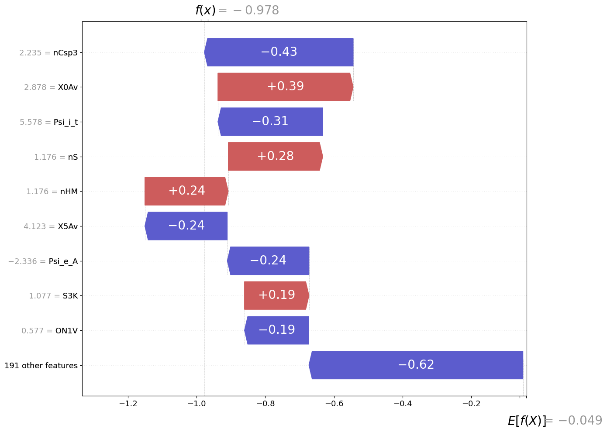
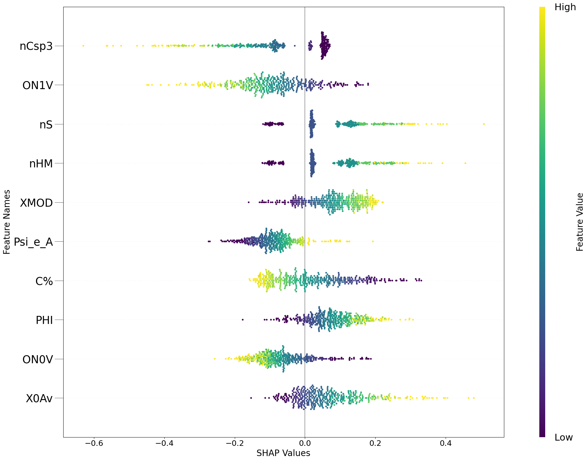
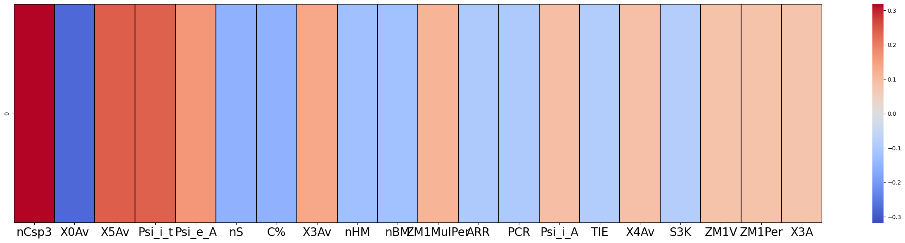
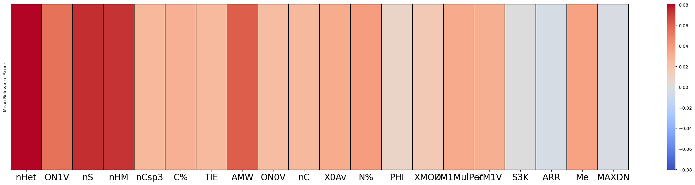
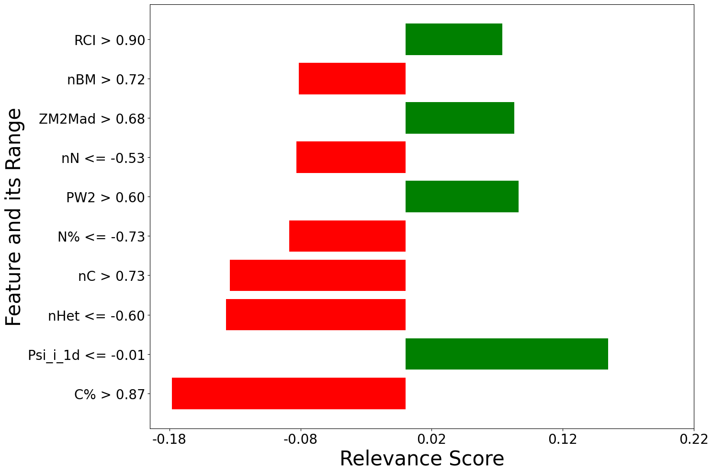
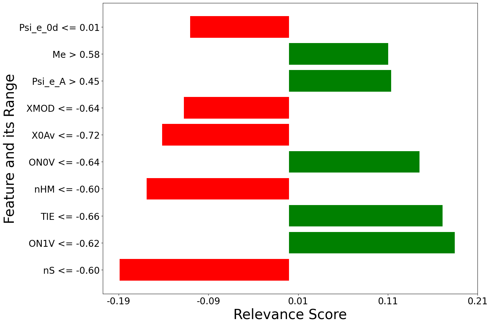
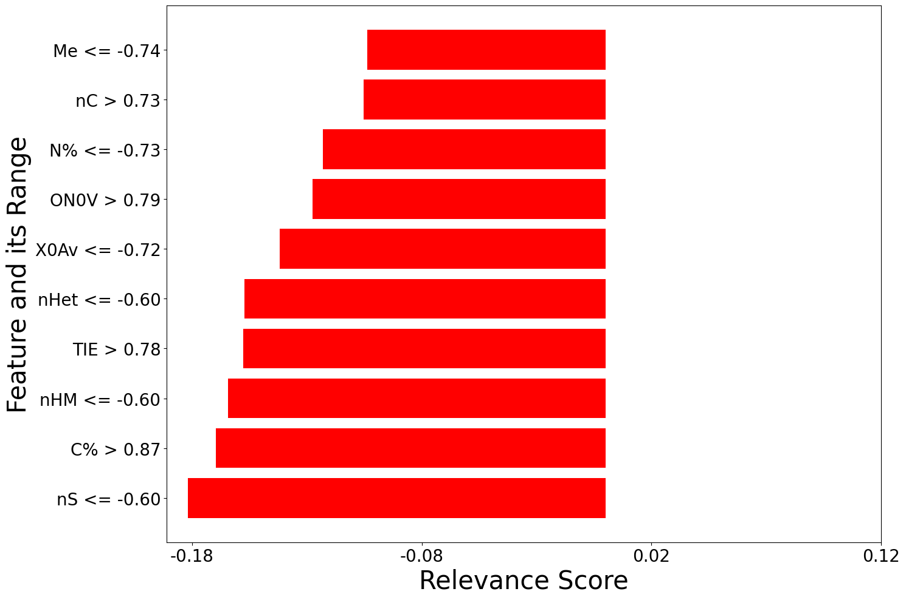

Generating Deep Neural Network Model Explanations via ChemML’s Explain Module
The chemml.explain module has three eXplainable AI (XAI) methods - DeepSHAP, LRP, and LIME. It allows both local (for a single instance) and global (aggregated for multiple instances) explanations. The explainations are in the form of a relevance score attributed to each feature used to build the DNN model.
We use a sample dataset from ChemML library which has the SMILES codes and 200 Dragon molecular descriptors (features) for 500 small organic molecules with their densities in \(kg/m^3\). We split the dataset into training and testing subsets and scale them. We then build and train a pytorch DNN on the training subset.
[1]:
import pandas as pd
import shap
from chemml.models import MLP
from chemml.datasets import load_organic_density
from sklearn.preprocessing import StandardScaler
from chemml.explain import Explain
_, y, X = load_organic_density()
columns = list(X.columns)
y = y.values.reshape(y.shape[0], 1).astype('float32')
X = X.values.reshape(X.shape[0], X.shape[1]).astype('float32')
# split 0.9 train / 0.1 test
ytr = y[:450, :]
yte = y[450:, :]
Xtr = X[:450, :]
Xte = X[450:, :]
scale = StandardScaler()
scale_y = StandardScaler()
Xtr = scale.fit_transform(Xtr)
Xte = scale.transform(Xte)
ytr = scale_y.fit_transform(ytr)
# PYTORCH
r1_pytorch = MLP(engine='pytorch',nfeatures=Xtr.shape[1], nneurons=[100,100,100], activations=['ReLU','ReLU','ReLU'],
learning_rate=0.001, alpha=0.0001, nepochs=100, batch_size=100, loss='mean_squared_error',
is_regression=True, nclasses=None, layer_config_file=None, opt_config='Adam')
r1_pytorch.fit(Xtr, ytr)
engine_model = r1_pytorch.get_model()
engine_model.eval()
[1]:
Sequential(
(0): Linear(in_features=200, out_features=100, bias=True)
(1): ReLU()
(2): Linear(in_features=100, out_features=100, bias=True)
(3): ReLU()
(4): Linear(in_features=100, out_features=100, bias=True)
(5): ReLU()
(6): Linear(in_features=100, out_features=1, bias=True)
)
DeepSHAP Explanations
We instantiate the chemml.explain object with an instance to be explained, the pytorch DNN object, and the feature names (columns). We then call the DeepSHAP method with a set of background or reference samples as directed by the SHAP library.
[2]:
X_instance = Xtr[0]
exp = Explain(X_instance = X_instance, dnn_obj = engine_model, feature_names = columns)
explanation, shap_obj = exp.DeepSHAP(X_background = Xtr[1:10])
explanation
[2]:
| MW | AMW | Sv | Se | Sp | Si | Mv | Me | Mp | Mi | ... | X4Av | X5Av | X0sol | X1sol | X2sol | X3sol | X4sol | X5sol | XMOD | RDCHI | |
|---|---|---|---|---|---|---|---|---|---|---|---|---|---|---|---|---|---|---|---|---|---|
| 0 | 0.031939 | -0.05199 | -0.006925 | -0.006857 | 0.027388 | -0.020872 | -0.057089 | -0.115971 | -0.00581 | -0.000805 | ... | -0.087464 | -0.240233 | 0.002718 | 0.003733 | 0.008075 | 0.011319 | 0.007988 | -0.000032 | 0.01838 | 0.002904 |
1 rows × 200 columns
Visualizing local DeepSHAP explanations using a waterfall plot adapted from the shap library.
[3]:
fig = exp.plot(local=True, rel_df=explanation,max_display=10, shap_obj=shap_obj)
c:\users\nitin\documents\ub\hachmann_group\chemml_dev_nitin\chemml\chemml\explain\visualize.py:126: FutureWarning: Series.__getitem__ treating keys as positions is deprecated. In a future version, integer keys will always be treated as labels (consistent with DataFrame behavior). To access a value by position, use `ser.iloc[pos]`
sval = shap_values[order[i]]
c:\users\nitin\documents\ub\hachmann_group\chemml_dev_nitin\chemml\chemml\explain\visualize.py:148: FutureWarning: Series.__getitem__ treating keys as positions is deprecated. In a future version, integer keys will always be treated as labels (consistent with DataFrame behavior). To access a value by position, use `ser.iloc[pos]`
yticklabels[rng[i]] = _format_value(features[order[i]], "%0.03f") + " = " + feature_names[order[i]]

[4]:
X_instance = Xtr
exp = Explain(X_instance = X_instance, dnn_obj = engine_model, feature_names = columns)
explanation, shap_obj = exp.DeepSHAP(X_background = Xtr[1:10])
explanation
[4]:
| MW | AMW | Sv | Se | Sp | Si | Mv | Me | Mp | Mi | ... | X4Av | X5Av | X0sol | X1sol | X2sol | X3sol | X4sol | X5sol | XMOD | RDCHI | |
|---|---|---|---|---|---|---|---|---|---|---|---|---|---|---|---|---|---|---|---|---|---|
| 0 | 0.031939 | -0.051990 | -0.006925 | -0.006857 | 0.027388 | -0.020872 | -0.057089 | -0.115971 | -0.005810 | -0.000805 | ... | -0.087464 | -0.240233 | 0.002718 | 0.003733 | 0.008075 | 0.011319 | 0.007988 | -0.000032 | 0.018380 | 0.002904 |
| 1 | -0.030329 | 0.045286 | 0.003471 | 0.009392 | -0.033369 | 0.005686 | 0.015329 | 0.132120 | -0.011706 | 0.006712 | ... | 0.013431 | 0.027834 | 0.004760 | -0.020271 | -0.006235 | -0.019104 | -0.005018 | -0.010347 | -0.040244 | -0.002089 |
| 2 | 0.073318 | -0.011014 | -0.010239 | -0.012253 | 0.034129 | -0.015133 | -0.017885 | 0.005359 | -0.016987 | 0.026442 | ... | 0.006582 | 0.013818 | -0.008897 | 0.031285 | 0.015545 | 0.022423 | 0.014267 | -0.002429 | 0.078428 | -0.039955 |
| 3 | -0.051775 | 0.060634 | 0.028966 | 0.011126 | -0.046096 | 0.022779 | -0.021990 | 0.079879 | -0.005687 | -0.001833 | ... | -0.055763 | -0.149791 | 0.011571 | -0.056075 | -0.012510 | -0.014471 | -0.010389 | -0.003207 | -0.077971 | 0.076956 |
| 4 | 0.078189 | 0.049846 | -0.006229 | -0.007896 | 0.024672 | -0.011916 | -0.001073 | 0.035578 | -0.000805 | 0.019776 | ... | 0.003993 | 0.007286 | -0.010335 | 0.039825 | 0.012199 | 0.021159 | 0.010633 | 0.004272 | 0.090355 | -0.020396 |
| ... | ... | ... | ... | ... | ... | ... | ... | ... | ... | ... | ... | ... | ... | ... | ... | ... | ... | ... | ... | ... | ... |
| 445 | 0.008847 | 0.394204 | 0.027389 | 0.021292 | -0.046195 | 0.024054 | 0.122414 | 0.310809 | 0.111767 | 0.002920 | ... | 0.001368 | 0.002888 | 0.011813 | -0.006262 | -0.004366 | 0.002759 | 0.004123 | -0.014602 | 0.027206 | 0.010870 |
| 446 | 0.064879 | 0.029331 | -0.023800 | -0.014171 | 0.023401 | -0.014327 | 0.026467 | -0.096276 | 0.037964 | -0.028652 | ... | 0.000230 | 0.005973 | 0.003281 | 0.038597 | 0.030991 | 0.038983 | 0.024876 | 0.010109 | 0.078109 | -0.032479 |
| 447 | 0.086556 | -0.004422 | -0.007464 | -0.019316 | 0.037914 | -0.011631 | -0.008085 | 0.005726 | -0.011518 | 0.041259 | ... | 0.008781 | 0.014713 | -0.020406 | 0.043650 | 0.018309 | 0.026390 | 0.009535 | 0.016264 | 0.104574 | -0.033671 |
| 448 | 0.090357 | 0.031684 | -0.036333 | -0.023286 | 0.013101 | -0.025404 | 0.024115 | -0.069291 | 0.041967 | -0.028402 | ... | 0.004694 | 0.006852 | 0.001424 | 0.085513 | 0.071626 | 0.091616 | 0.028419 | 0.041313 | 0.184755 | -0.036952 |
| 449 | 0.110965 | 0.032688 | -0.040615 | -0.028315 | 0.032846 | -0.037154 | 0.013515 | -0.028467 | 0.022227 | -0.025841 | ... | -0.010460 | -0.014772 | -0.005115 | 0.075755 | 0.068138 | 0.088936 | 0.046433 | 0.050386 | 0.161519 | -0.073746 |
450 rows × 200 columns
[5]:
fig = exp.plot(local=False, rel_df=explanation,max_display=10, shap_obj=shap_obj)
c:\users\nitin\documents\ub\hachmann_group\chemml_dev_nitin\chemml\chemml\explain\visualize.py:381: UserWarning: No data for colormapping provided via 'c'. Parameters 'vmin', 'vmax' will be ignored
ax.scatter(shaps[nan_mask], pos + ys[nan_mask], color="#5c5ccd", vmin=vmin, vmax=vmax, s=16, alpha=1, linewidth=0, zorder=3) #, rasterized=len(shaps)>500)

[6]:
X_instance = Xtr[0]
exp = Explain(X_instance = X_instance, dnn_obj = engine_model, feature_names = columns)
explanation, gb = exp.LRP(strategy='zero', global_relevance=False)
explanation
[6]:
| MW | AMW | Sv | Se | Sp | Si | Mv | Me | Mp | Mi | ... | X4Av | X5Av | X0sol | X1sol | X2sol | X3sol | X4sol | X5sol | XMOD | RDCHI | |
|---|---|---|---|---|---|---|---|---|---|---|---|---|---|---|---|---|---|---|---|---|---|
| 0 | 0.0357 | 0.060859 | -0.030067 | -0.000306 | 0.011614 | -0.00287 | 0.038521 | 0.075271 | 0.012589 | -0.001871 | ... | 0.087779 | 0.240536 | -0.009204 | 0.0284 | 0.03282 | 0.028609 | 0.015671 | -0.003383 | 0.059679 | -0.03687 |
1 rows × 200 columns
[7]:
f = exp.plot(local=True,rel_df = explanation, max_display=20)

[8]:
# strategies + global relevance
X_instance = Xte
exp = Explain(X_instance = X_instance, dnn_obj = engine_model, feature_names = columns)
explanation, gb = exp.LRP(strategy='zero', global_relevance=True)
explanation.head()
[8]:
| MW | AMW | Sv | Se | Sp | Si | Mv | Me | Mp | Mi | ... | X4Av | X5Av | X0sol | X1sol | X2sol | X3sol | X4sol | X5sol | XMOD | RDCHI | |
|---|---|---|---|---|---|---|---|---|---|---|---|---|---|---|---|---|---|---|---|---|---|
| 0 | -0.002375 | -0.002310 | 0.003538 | 0.000393 | 0.002531 | 0.000539 | -0.003484 | 0.005217 | -0.006279 | 0.010001 | ... | -0.000975 | 0.000208 | -0.000257 | -0.006816 | -0.006439 | -0.011138 | 0.000251 | -0.004060 | -0.012186 | 0.000308 |
| 1 | 0.031408 | 0.003845 | -0.003586 | -0.000377 | 0.027020 | -0.001780 | -0.002846 | -0.015842 | -0.002071 | -0.001520 | ... | -0.003107 | -0.015789 | -0.003154 | 0.009662 | 0.004628 | 0.018693 | 0.008019 | 0.004508 | 0.030692 | -0.002962 |
| 2 | -0.003544 | 0.010888 | 0.010702 | 0.010161 | 0.009560 | 0.011691 | -0.010409 | 0.024565 | -0.007086 | 0.010840 | ... | -0.008347 | -0.008716 | -0.009222 | -0.013408 | -0.038706 | -0.029874 | -0.009861 | -0.006868 | -0.024265 | 0.010711 |
| 3 | 0.336607 | 0.222507 | -0.021707 | 0.050956 | 0.121637 | -0.015981 | 0.095192 | 0.031510 | 0.073009 | -0.109299 | ... | -0.013377 | -0.021679 | -0.057243 | 0.103574 | -0.009558 | 0.117196 | 0.026707 | 0.029786 | 0.304746 | -0.031534 |
| 4 | -0.008907 | -0.007431 | 0.001667 | 0.000218 | -0.007712 | 0.000166 | -0.007769 | 0.010181 | -0.007833 | 0.010821 | ... | 0.004072 | 0.007154 | 0.001378 | -0.005021 | -0.004586 | -0.005019 | -0.004799 | -0.008497 | -0.007774 | -0.002996 |
5 rows × 200 columns
[9]:
gb
[9]:
| Mean Absolute Relevance Score | Mean Relevance Score | |
|---|---|---|
| nHet | 0.083375 | 0.080595 |
| ON1V | 0.082356 | 0.054230 |
| nS | 0.082029 | 0.073870 |
| nHM | 0.081260 | 0.072965 |
| nCsp3 | 0.081243 | 0.026852 |
| ... | ... | ... |
| SRW10 | 0.004217 | 0.000566 |
| MWC01 | 0.004144 | 0.001311 |
| Psi_i_0d | 0.003676 | -0.003646 |
| LPRS | 0.002950 | 0.000132 |
| Psi_i_1d | 0.001783 | 0.001676 |
200 rows × 2 columns
[10]:
f = exp.plot(local=False,rel_df = gb, max_display=20)

[11]:
X_instance = Xte[0:3]
exp = Explain(X_instance = X_instance, dnn_obj = engine_model, feature_names = columns)
explanation = exp.LIME(training_data=Xtr)
print(explanation)
Intercept 0.11532020646501222
Prediction_local [-0.25389418]
Right: -0.18441454
Intercept 0.22570137102586968
Prediction_local [0.09135068]
Right: -0.35446894
Intercept 0.30997393583284116
Prediction_local [-0.77875192]
Right: -0.5938779
[ labels local_relevance
0 C% > 0.87 -0.178290
1 Psi_i_1d <= -0.01 0.154477
2 nHet <= -0.60 -0.136784
3 nC > 0.73 -0.133803
4 N% <= -0.73 -0.088682
.. ... ...
195 0.05 < Xu <= 0.86 0.000874
196 0.06 < X1sol <= 0.88 -0.000847
197 X0A <= -0.68 -0.000638
198 0.03 < Sp <= 0.79 -0.000621
199 piPC10 > 0.86 -0.000148
[200 rows x 2 columns], labels local_relevance
0 nS <= -0.60 -0.188840
1 ON1V <= -0.62 0.184538
2 TIE <= -0.66 0.171063
3 nHM <= -0.60 -0.158884
4 ON0V <= -0.64 0.145337
.. ... ...
195 X5v <= -0.65 -0.001563
196 -0.30 < MAXDP <= 0.26 0.001506
197 -0.62 < piPC10 <= 0.15 -0.001110
198 0.08 < AECC <= 0.70 -0.000295
199 -0.52 < HNar <= 0.42 0.000197
[200 rows x 2 columns], labels local_relevance
0 nS <= -0.60 -0.181937
1 C% > 0.87 -0.169501
2 nHM <= -0.60 -0.164351
3 TIE > 0.78 -0.157693
4 nHet <= -0.60 -0.157111
.. ... ...
195 piPC10 > 0.86 0.000914
196 MWC10 > 0.88 0.000862
197 Psi_i_s > 0.86 -0.000552
198 MWC02 > 1.03 -0.000424
199 -0.19 < X4v <= 0.43 0.000020
[200 rows x 2 columns]]
[12]:
f=[]
for local_explanation in explanation:
f.append(exp.plot(local=True, rel_df = local_explanation, max_display=10))



[ ]: